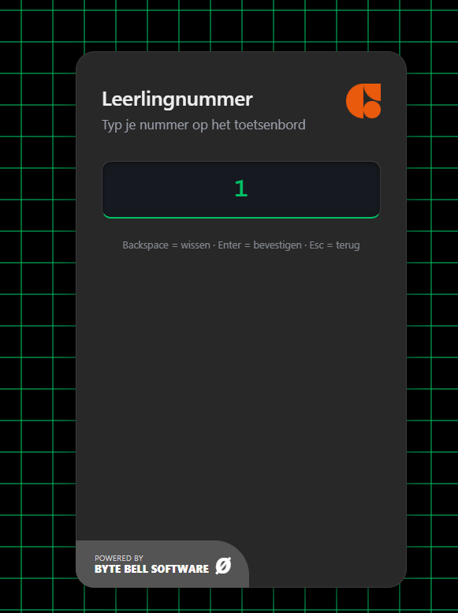
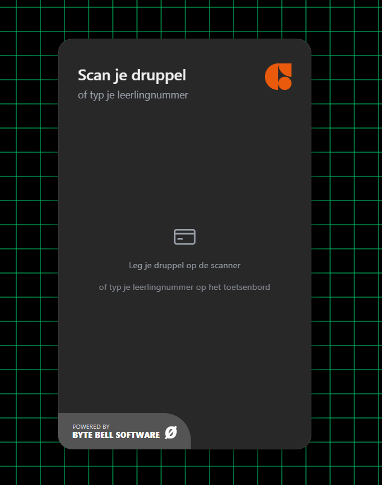
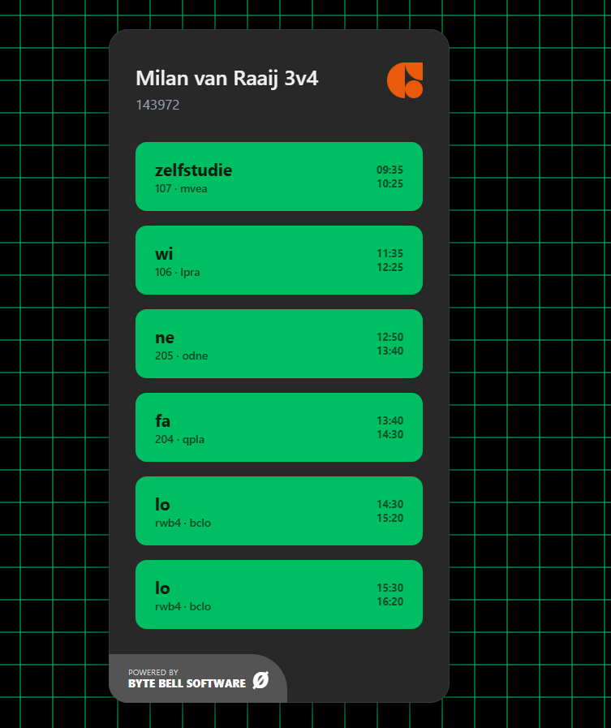

Scan je druppel — zie je rooster. Een vaste terminal voor het Willem van Oranje College die telefoons overbodig maakt.



Telefoons zijn verboden op school. Leerlingen kunnen nergens snel hun rooster checken. Project ZRN plaatst een vaste kiosk-terminal in de gang — druppel erop, rooster in beeld.
Leerling legt schooldruppel op scanner. Rooster verschijnt direct — geen inloggen, geen wachten.
Geen druppel? Leerlingnummer intypen werkt ook. Volledig toetsenbordgestuurd, geen touchscreen nodig.
Geen ontsnapping naar terminal of desktop. Dichtgezet op systeem- én kernel-niveau. Uitgebreid getest.
Vrijwillig gebouwd door Milan van Raaij en Nik. Professionele codebase op GitHub (private).
MFRC522-reader leest UID van MIFARE Classic 1K druppel. Druppels bevatten alleen UID — geen leerlingnummer in de data.
Lokale SQLite-database koppelt UID aan leerlingnummer. Eerste keer: leerling typt nummer in (enrollment). Daarna: automatisch.
Pi haalt rooster op via wvoo.zportal.nl/api/v3/appointments met user=<leerlingnummer>. Getest en werkend met eigen account.
Naam, klas, leerlingnummer bovenaan. Lessen als groene blokken — vaknaam, lokaal, docent, tijd. Scrollt bij volle dag.
Op school staat inmiddels een roosterpaal van een andere partij. Die laat zien wat er goed en fout kan gaan — en geeft ons concrete verbeterpunten voor Project ZRN.
Het rooster van elke leerling is opvraagbaar zonder verificatie. Dat zou acceptabel zijn — maar de paal laat ook toe dat je voor anderen iets inplant. Dat is een serieus probleem.
Eén terminal voor de hele school is te weinig. Er staat altijd een rij, zeker tussen de lessen door.
Alleen leerlingroosters worden getoond. Docenten kunnen hun eigen rooster niet opvragen, en lokalen zijn niet in te zien.
Ondersteuning voor het 40-minutenrooster dat op school gebruikt wordt — correcte tijdsloten in plaats van standaard uurblokken.
Vakantiedagen en vrije periodes worden expliciet weergegeven, zodat leerlingen niet voor een leeg scherm staan.
Naast het dagrooster ook een overzicht van de hele week — zodat leerlingen vooruit kunnen kijken.